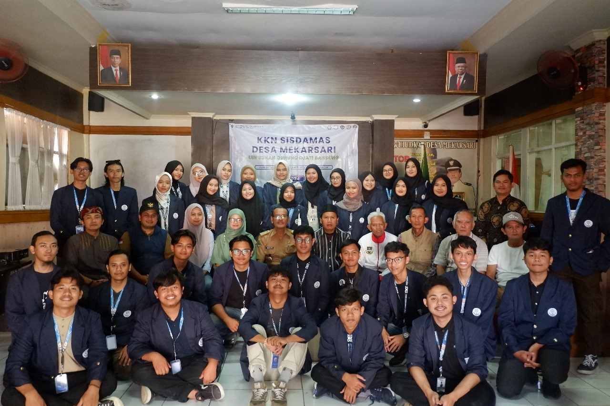
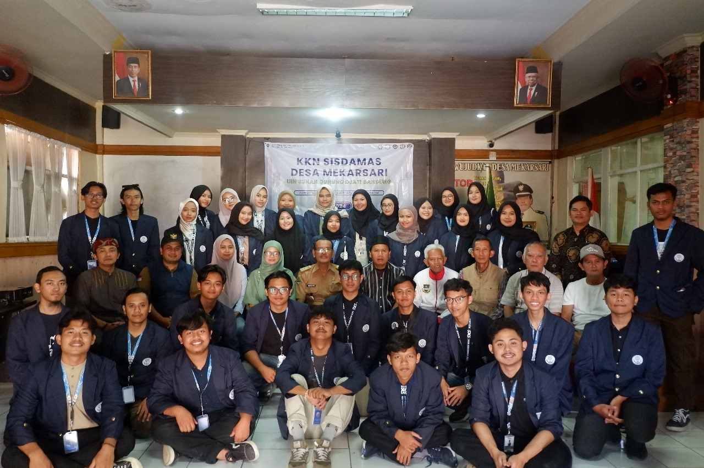
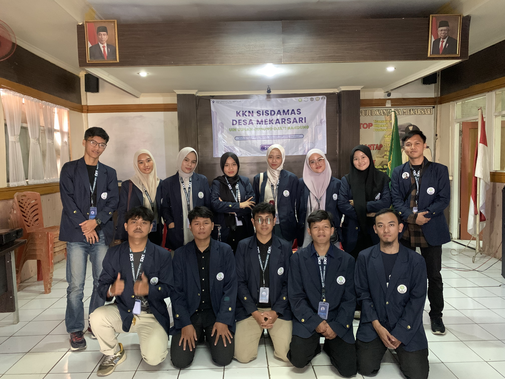
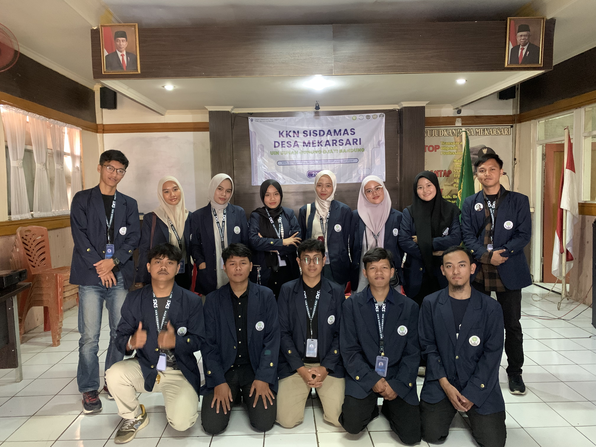

 

Senin 29 Juli 2024 Kelompok KKN kami melaksakan acara pembukaan yang dilaksanakan di Aula Desa Mekarsari. Acara dimulai pada pukul 09.00 WIB dan dihadiri oleh peserta KKN dari tiga berbagai kelompok, bapak Kepala Desa, Dosen Pembimbing lapangan, ketua Dusun, ketua RW, dan Tokoh masyarakat yang lainnya.
Acara dimulai dengan pembacaan ayat suci Al-Quran, sambutan-sambutan, serta pemaparan dan penjelasan siklus program KKN Sisdamas oleh perwakilan dari tiga kelompok. Hal ini bertujuan untuk saling mengenal dan memberikan gambaran umum tentang kegiatan yang akan dilaksanakan selama KKN.
Acara diakhiri dengan doa dan potong pita oleh kepala desa mekarsari. Diakhiri dengan foto bersama seluruh peserta sebagai tanda dimulainya program KKN ini.